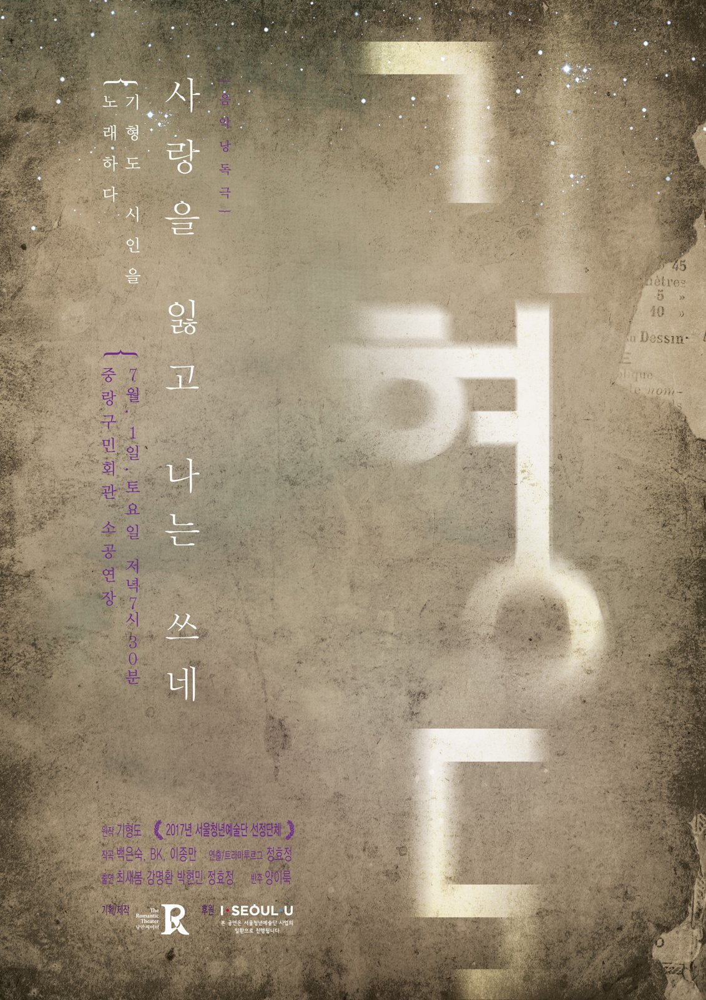

Having Lost Love, I Write
기형도 시 원작 · after the poems of Gi Hyeong-do
서울청년예술단 〈살롱프로젝트〉 첫 번째 작품 · 2016년 겨울 초연 · 2017년 서울 순회와 기형도문학관 개관식 · 2021년 찾아가는 기형도문학관 · The first work in the Salon Project · premiered winter 2016 · 2017 Seoul tour and the opening of the Gi Hyeong-do Literature House · revived 2021 as a touring school programme
〈사랑을 잃고 나는 쓰네〉는 시인 기형도의 작품을 무대 위로 옮긴 음악낭독극이다. 정효정이 고등학생 시절부터 아껴 읽어온 기형도의 시를, 낭만씨어터의 〈살롱프로젝트〉 첫 번째 작품으로 골랐다. 화려한 무대 장치 없이 배우들의 낭독과 노래, 피아노 한 대의 반주만으로 — 시의 결을 따라가는 작은 무대다.
기형도(1960–1989)는 스물아홉의 나이로 세상을 떠나며 많은 작품을 남기지 못했지만, 유고 시집 〈입 속의 검은 잎〉으로 한 시대의 정서를 대표하는 시인이 되었다. 안개 낀 거리와 빈집, 누이와 어머니의 풍경을 그린 그의 시를, 낭만씨어터는 노래로 다시 불러낸다.
Having Lost Love, I Write is a music-reading theatre piece built from the poems of the Korean poet Gi Hyeong-do. Poems that director Hyojung Jung had loved since her school years became the first work in Nangman Theatre's Salon Project. Without elaborate scenery, it is carried by the performers' reading and singing and a single piano — a small stage that follows the grain of the verse.
Gi Hyeong-do (1960–1989) died at twenty-nine, leaving behind a slim body of work; his posthumous collection A Black Leaf in My Mouth made him one of the defining voices of his generation. Nangman Theatre gives his images of fog-bound streets, empty houses, sisters and mothers a second life in song.
사랑을 잃고 나는 쓰네
잘 있거라, 짧았던 밤들아
창밖을 떠돌던 겨울 안개들아
— 기형도, 〈빈집〉 중에서 · from “Empty House”
전 곡이 기형도 시인의 시를 노랫말로 삼았다. · Every piece is set to a poem by Gi Hyeong-do.
서울청년예술단 〈살롱프로젝트〉 1탄 · Seoul Youth Arts Group — Salon Project I (2016–2017)
서울청년예술단 선정 사업의 일환으로 서울시 자치구를 순회한 공연. · Presented on tour across Seoul's districts as part of the Seoul Youth Arts Group programme.
초청 공연 · Invited performances (2017)
찾아가는 기형도문학관 초청공연 · Invited — Gwangmyeong Cultural Foundation & the Literature House (2021)
광명문화재단과 기형도문학관의 초청으로 〈찾아가는 기형도문학관〉 프로그램에 참여한 공연. · Performed by invitation of the Gwangmyeong Cultural Foundation and the Gi Hyeong-do Literature House.
초연 · 영등포구 카페 (2016년 12월) · Premiere — a café in Yeongdeungpo-gu, Seoul
초연 공연 장면 · 영등포구 카페 (2016) · The premiere, in performance
초연 · 카페를 가득 채운 관객과 함께 (2016)
The premiere — with a full house in the café
서울 순회 · 초청 공연 · Seoul tour & invited performances (2017)
공연 장면 · 인천 송도 해돋이도서관 (2017) · In performance
공연 전경 · 서울시립 북서울미술관 로비 (2017)
A full view · the lobby of the Buk-Seoul Museum of Art
공연 장면 · 서울시립 북서울미술관 (2017)
기형도문학관 개관식 · 출연진과 기향도 기형도문학관 관장(기형도 시인의 누나, 왼쪽에서 네 번째) 및 관계자 (2017)
At the Literature House opening — the company with director Gi Hyang-do, the poet's elder sister (fourth from left), and staff
공연 포스터 · Performance posters
서울시립 북서울미술관 (2017)
찾아가는 기형도문학관 (2021)
기형도문학관 개관식 · Gi Hyeong-do Literature House — opening (2017)
개관식 포스터 · Opening poster
개관식 프로그램 · Programme
리플렛 · Leaflet (살롱프로젝트 1탄)
리플렛 — 기획의도 · 순서 · 단체소개 · 배우와 스탭
리플렛 — 단장의 글 (인천 송도 해돋이도서관 공연)
단장의 글 · Director's Note (한글 원문은 위 리플렛에 수록 · Korean original in the leaflet above)
I have loved the poems of Gi Hyeong-do since my high-school years. That is why I wanted his work to be the very first piece in our company's Salon Project. I suspect that eight-tenths of whatever drives me through life is unrequited love. Last December we sang his poems in a small café in Yeongdeungpo-gu. This year Nangman Theatre was selected as a 2017 Seoul Youth Arts Group and set out on a touring project across the city's 25 districts. This spring we finished a café tour of eight districts with our second piece, On Love, and we are now in rehearsal for the third, Camera Lucida. To be staging the first piece, Having Lost Love, I Write, in the middle of all this feels wonderfully new — like dreaming, for a moment, of a first love I had set aside. My thanks to everyone at the Buk-Seoul Museum of Art for creating the chance to revive a work I had quietly tucked away after that December performance.
Gi Hyeong-do, like certain geniuses, lived only a short life. He was found dead of a stroke in a late-night cinema in Jongno. He did not leave a large body of work. He was a tidy, scholarship-winning student and a young man of letters who loved poetry. In his university days the open-air theatre was his haunt, and his habit was to roam the campus singing. He was a romantic student who walked forest paths or sat on the stone steps reading Plato. Even after he graduated and joined the JoongAng Ilbo newspaper, he was known as a cheerful young reporter who sang well. A life that loved “literature” and delighted in “song” fits the very identity of Nangman Theatre. I quietly hold a dream of one day making a play, a musical, or a film from this poet's life.
I wonder how you will receive the world of Gi Hyeong-do's poetry as our actors give it in song, in speech, and in reading aloud. The man I loved from afar all through my teens died at twenty-nine — so now he has become about my own age. To the poet who kept the cold corner of my childhood company, I dedicate this work forever. A poet at once beautiful and despairing. I hope that you, too, will remember him this way.
— Hyojung Jung, Director, Nangman Theatre